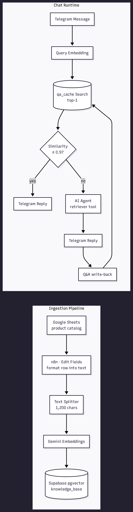

AI AUTOMATION · N8N · RAG · SEMANTIC CACHING · TELEGRAM
PartsPilot Agentic Support Bot
An agentic Telegram customer-support bot for a computer accessories store. It answers product questions from a RAG knowledge base and uses semantic caching so repeated questions are answered instantly — without spending another LLM call.
01 · Problem
Problem Statement
The Challenge
A computer accessories business receives the same product questions over and over — specs, compatibility, price, availability. Every answer required a human to dig through the catalog and type a fresh response from scratch.
Why It Matters
Manual lookup is slow, inconsistent, and doesn't scale. Worse, when an AI answers, every repeated question still costs a full LLM generation — so latency and token spend keep growing as chat volume climbs.
Goals
- Answer product questions from the knowledge base in under 5–6 sentences.
- Serve repeated questions instantly from a semantic cache.
- Keep answers grounded in the catalog via a RAG retriever tool.
02 · Design
System Architecture

How It Works
- A Google Sheet with the product catalog is pulled into n8n, formatted into clean text, split into chunks, embedded with Gemini, and written to a Supabase vector store.
- When a customer messages the Telegram bot, the question is embedded and matched against a qa_cache vector table; if similarity is at least 0.9, the cached answer is returned instantly.
- On a miss, an AI agent with a retriever tool (knowledge_base) generates the answer from the catalog, replies in Telegram, and writes the Q&A pair back to qa_cache for next time.
Tech Stack
- AI / LLM — Google Gemini (chat + embeddings), OpenAI
- RAG / Vectors — Supabase pgvector (knowledge_base + qa_cache)
- Orchestration — n8n, LangChain agent + memory
- Channel — Telegram Bot API
03 · Videos
Project Videos
PartsPilot Agentic Rack Telegram Bot Demo
End-to-end walkthrough of the bot answering product questions inside Telegram.
Semantic Caching with Supabase VectorStore
Explains how semantic caching short-circuits repeated questions and cuts LLM cost.
04 · Process
Standard Operating Procedure (SOP)
The repeatable process used to build and run PartsPilot.

Ingest the Product Catalog
Pull every row from the product Google Sheet and rebuild each one into a clean text block (Name, Category, SKU, Price, Description). The Edit Fields node also attaches Category and SKU as metadata for later filtering.

Chunk, Embed & Store
Split each product description into 1,200-character chunks with the Recursive Character Text Splitter and embed them using Google Gemini. The Supabase Vector Store then writes every chunk into the knowledge_base table.

Retrieve With a Semantic Cache
The Telegram trigger starts the flow, embedding the customer's message and searching the qa_cache table for the top-1 match. If similarity is at least 0.9, the cached answer is returned instantly and the LLM is never invoked.

Answer Misses & Write Back
On a cache miss, the AI agent answers using a retriever tool pointed at knowledge_base and sends the reply over Telegram. The question and answer pair is then embedded and inserted into qa_cache so the next identical question is served instantly.
Notes & Caveats
The semantic-cache threshold (0.9) controls the accuracy/latency trade-off — lower it to catch more paraphrase matches, raise it to stay safer. The knowledge base must be re-ingested whenever the catalog changes.